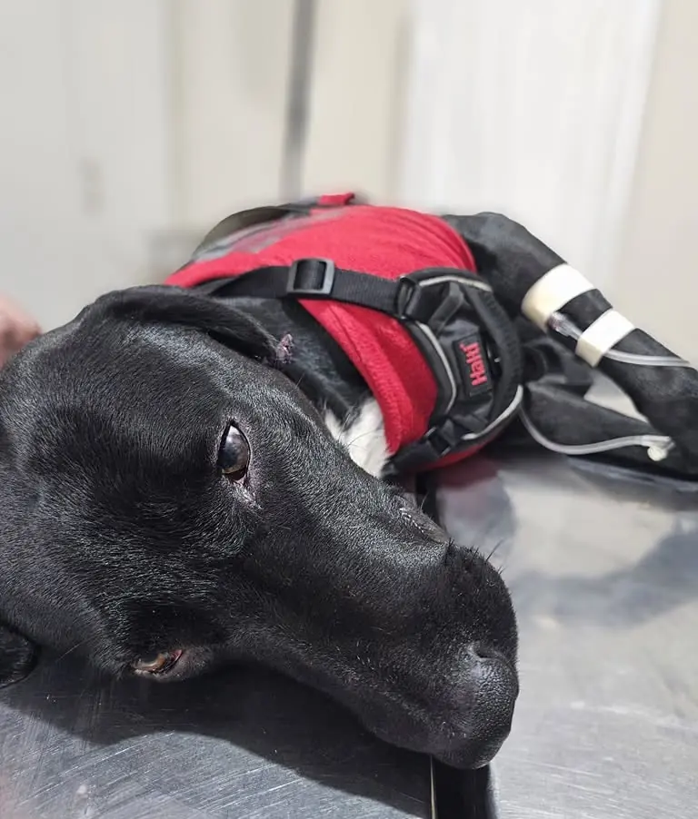

Services médicaux · Endocrinologie
Endocrinologie vétérinaire à Trujillo
Soif excessive, prise de poids, chute de poils… parfois le problème est hormonal.
Nous confirmons et contrôlons les déséquilibres hormonaux de votre animal —diabète, thyroïde, Cushing— avec des tests spécifiques et un suivi. Écrivez-nous si vous remarquez des changements persistants.
Consulter par WhatsApp
Ce que c'est et pourquoi c'est important
Les hormones gouvernent le métabolisme, et lorsqu'elles se déséquilibrent les signes apparaissent peu à peu et sont souvent confondus avec des « choses liées à l'âge » : soif et urine excessives, prise ou perte de poids, chute de poils, faiblesse ou infections qui se répètent. La bonne nouvelle, c'est que la plupart de ces troubles se diagnostiquent et se contrôlent.
Ce que nous faisons
Une évaluation clinique ciblée et les tests spécifiques qui confirment le diagnostic —et non une analyse générique— pour ensuite ajuster le traitement avec un suivi rapproché, car en endocrinologie le contrôle s'affine avec le temps.
Ce que nous évaluons (en clair)
- Diabète — excès de glucose (sucre) dans le sang ; il se détecte dans le sang et l'urine, et se contrôle avec un traitement et un suivi.
- Maladie de la thyroïde — la thyroïde régule le métabolisme ; son excès (chats) ou son déficit (chiens) se mesurent dans le sang.
- Cushing (hyperadrénocorticisme) — excès de cortisol, l'hormone du stress ; il se diagnostique avec des tests spécifiques suivant le consensus de l'ACVIM.
Les changements « de vieillesse » méritent un test plutôt qu'une résignation. Beaucoup s'expliquent par une hormone, et peuvent être pris en charge.
Quand consulter
Si vous remarquez des changements persistants dans la soif, l'appétit, le poids, l'énergie ou le pelage de votre animal. Plus tôt on le confirme, mieux on le contrôle. Écrivez-nous en nous racontant ce qui a changé.
Votre animal boit-il beaucoup d'eau, a-t-il changé de poids ou perd-il ses poils sans raison ? Cela peut être hormonal, et cela se contrôle. Écrivez-nous.
Consulter par WhatsAppQuestions fréquentes
Mon animal boit beaucoup d'eau et urine davantage, pourquoi ?
La soif et l'urine excessives sont un signe classique de plusieurs troubles hormonaux (diabète, Cushing) ainsi que rénaux. Ce n'est pas normal et il convient de l'étudier : des analyses de sang et d'urine permettent d'identifier la cause et d'entamer le contrôle.
Le diabète chez les animaux de compagnie se traite-t-il ?
Oui. Le diabète chez le chien et le chat se contrôle avec un traitement et un suivi, et de nombreux patients mènent une vie normale. La clé est un diagnostic précoce et un ajustement soigné, que nous réalisons par des contrôles périodiques.
De notre plume (sur les épaules de géants, en commençant par les nôtres)
Voici un domaine que notre propre vétérinaire, la Dre Jessica Camacho (CMVP 12434), a développé dans son œuvre technique en libre accès : Hyperadrénocorticisme (Cushing) et dermatologie et Hypothyroïdie, syndrome euthyroïdien malade et dermatologie. Nous ne faisons pas que suivre les données : nous les produisons aussi.
Références
- Behrend, E. N., Kooistra, H. S., Nelson, R., Reusch, C. E., & Scott-Moncrieff, J. C. (2013). Diagnosis of Spontaneous Canine Hyperadrenocorticism: 2012 ACVIM Consensus Statement (Small Animal). Journal of Veterinary Internal Medicine, 27(6), 1292–1304. https://doi.org/10.1111/jvim.12192
- American Animal Hospital Association (AAHA). (2018). Diabetes Management Guidelines for Dogs and Cats. AAHA. https://www.aaha.org/resources/2018-aaha-diabetes-management-guidelines-for-dogs-and-cats/
- Camacho García, J. Y. (2026). Hiperadrenocorticismo canino y dermatología: manifestaciones cutáneas y diagnóstico diferencial entre Cushing verdadero e hipercortisolemia funcional [Revisión técnica]. Acceso abierto (CC BY 4.0). https://jessica-camacho.com/diagnostico-veterinario/hiperadrenocorticismo-cushing-dermatologia-canina/
- Camacho García, J. Y. (2026). Hipotiroidismo canino y dermatología: signos cutáneos, el confusor del eutiroideo enfermo (NTIS) y el diagnóstico diferencial [Revisión técnica]. Acceso abierto (CC BY 4.0). https://jessica-camacho.com/diagnostico-veterinario/hipotiroidismo-eutiroideo-enfermo-dermatologia-canina/